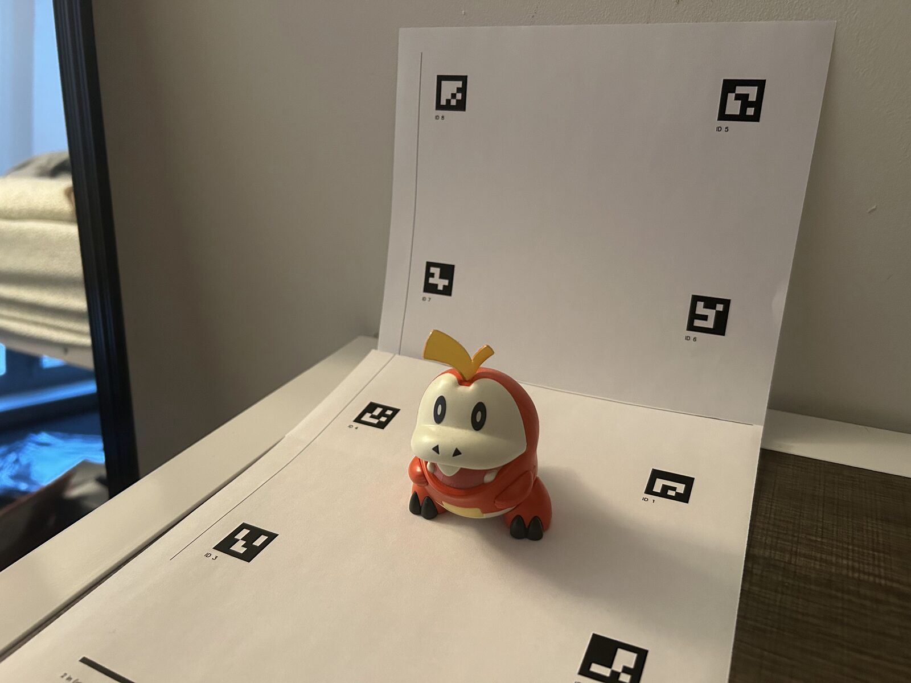
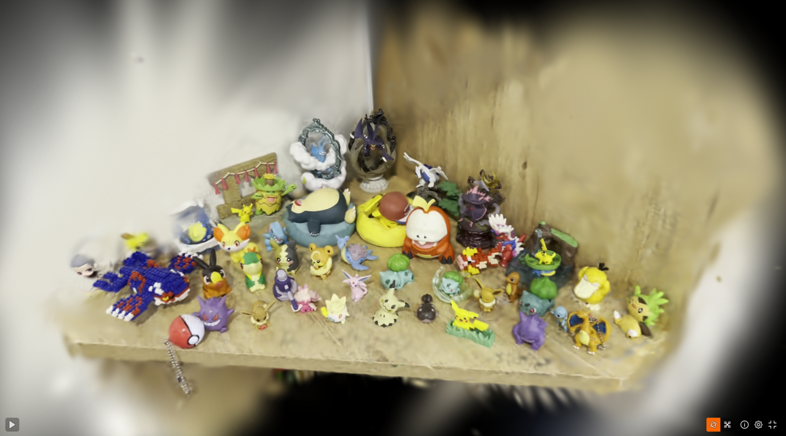
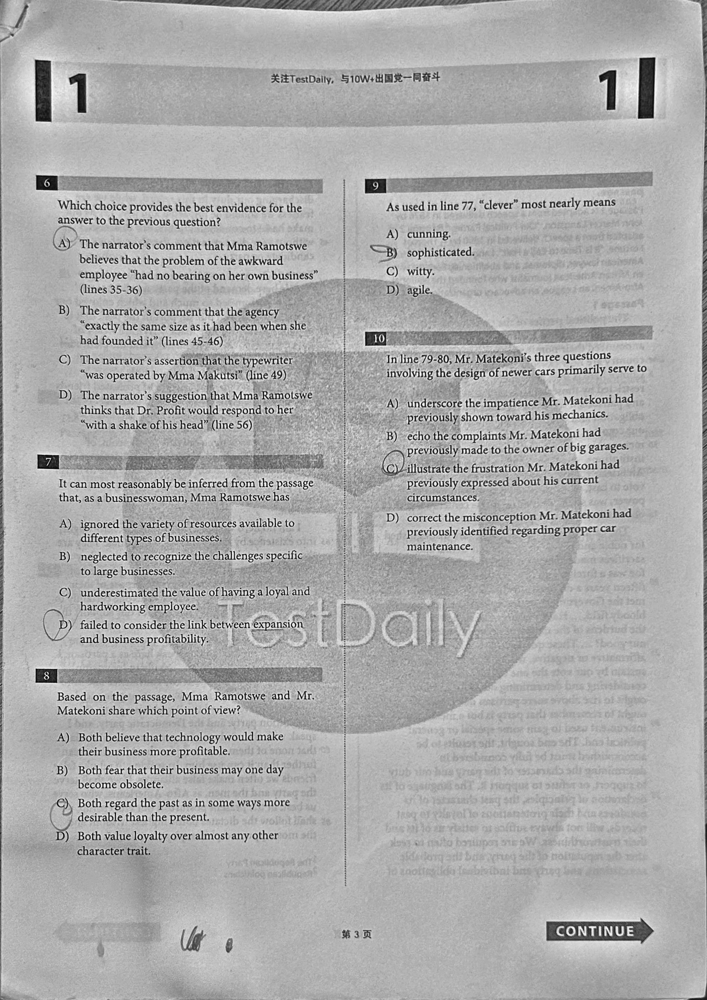
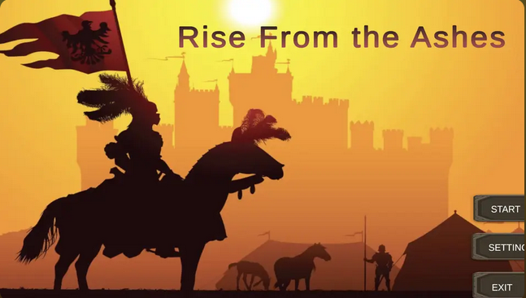
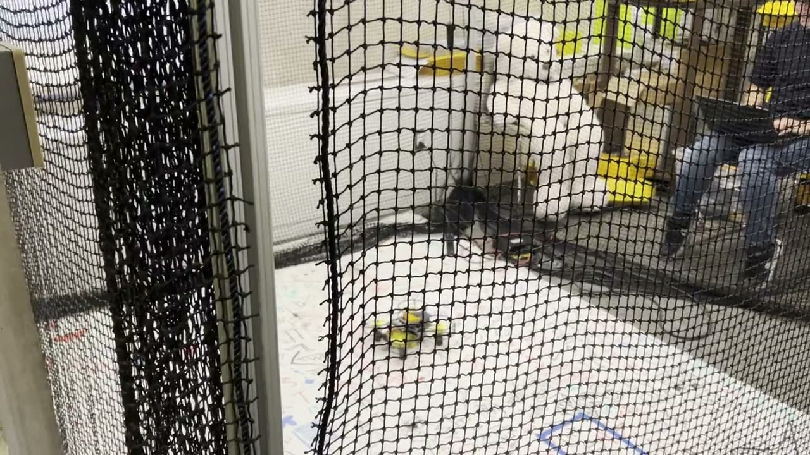

Manh Tran
Robotics · Computer Vision @ Brown
Relevant Links
Hi! I'm a graduate student at Brown University working in Robotics and Computer Visions working with H2R, and IRL labs. My current interests span mobile navigation and 3D reconstruction for robots perception.
Life snippets:
PiDrone
Building PiDrone
Spot dancing

Scanning Fuecoco
3D Splat · click to view in 3D
Building PiDrone

Cam scanner
Built a web-based document scanner that detects document boundaries, performs perspective correction, and applies image enhancement to produce clean scanned documents.
Python · Image Processing · Geometric Transformation · OpenCV
RFTA - indie games
Rise From The Ashes, a small indie game built in Unity with C#.
Unity · C#KVStore with RAFT Protocol
Built a distributed key-value store in Python, implementing a simplified Raft consensus protocol for leader election and log replication. Replicas communicate over UDP with JSON-encoded messages and are exercised by a custom simulator that injects network drops, partitions, and replica crashes to validate correctness under faults.
Python · Raft · UDP Networking
DevOps Engineer
FPT Software
During my time at FPT, I learned to design and deploy secure, multi-tier Azure infrastructure using Terraform, along with the automation of the provisioning cloud resources. I mainly worked with IaC practices to create reproducible and maintainable deployment environments.
Cloud Infrastructure · IaC · TerraformQuality Assurance Automation Co-op
MFS Investment Management
I had the chance to work with the amazing QA Team at MFS where I developed and maintained automated test scripts to improve software testing efficiency and reliability. Other responsibilities involved maintaining Jenkins CI pipelines and test suites, while creating documentation to support testing workflows and future maintenance.
Python · QA · TestCompleteTeaching Assistant
Northeastern University
I was a part of CS1800 Discrete Structure course teaching assistant staff for 3 semesters at Northeastern University.
My main responsibilities involve holding weekly Office Hours, providing 1-1 mentor session for students and developing supplementary materials for class.
Discrete Math · TA